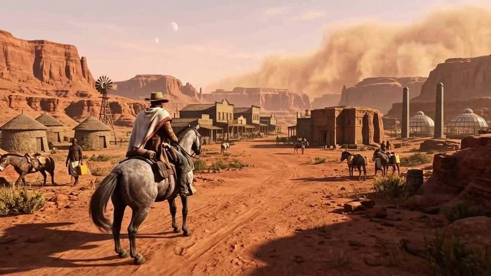
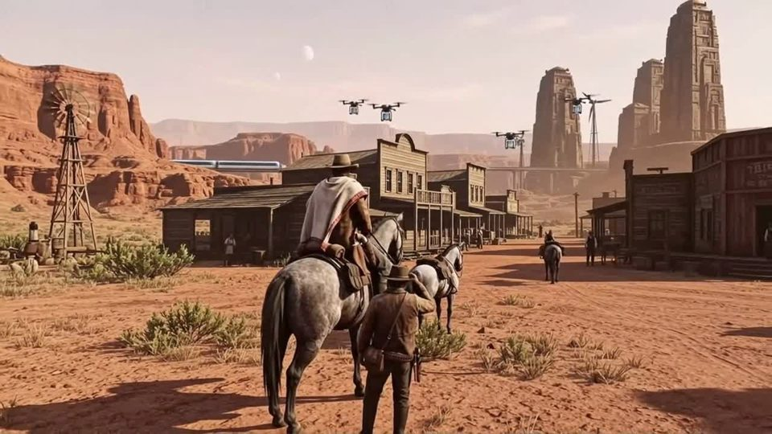
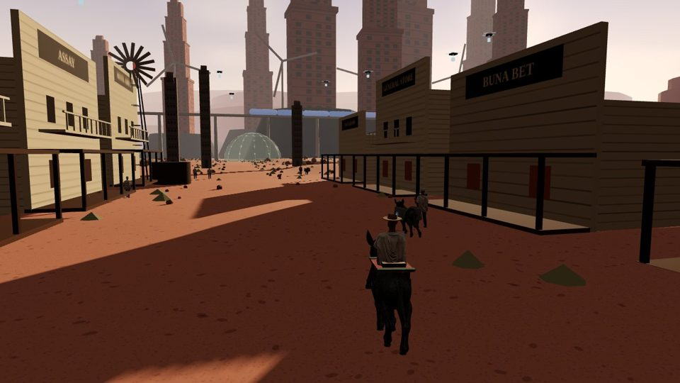
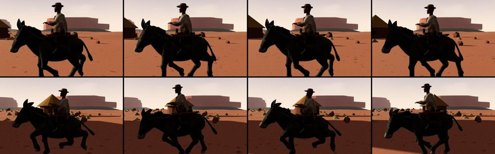

Opening


The film's opening, rebuilt at its own spot: the open edge of town with desert and tukuls on the left and the street ahead. The camera sits off Tex's right shoulder, as Genie's does, and the low sun is ahead and to the right.
Video to game, and back. A 40-second Genie 4 take, one session steered with W A S D, became a playable level built from make-photo's own parts. Then a loop measured the level against the film, region by region, and corrected it until it stopped getting closer. Where it stopped is the point of this page.

The film's opening, rebuilt at its own spot: the open edge of town with desert and tukuls on the left and the street ahead. The camera sits off Tex's right shoulder, as Genie's does, and the low sun is ahead and to the right.


The future the film drew is carved sandstone, not glass: monoliths the size of skyscrapers, cut like Aksum stelae, with white wind turbines, a blue-white train on an elevated line and drones carrying lit cans. The game now builds exactly those.

Tex now sits on the saddle point of make-photo's donkey, which moves with its back. On top of that his body gives on a spring, rises every other beat at the trot, rocks with the canter, leans forward with speed and sways into turns. His legs hang either side of the barrel and his hands are forward on the reins: a new ride pose in donkey/characters.js.
Eight regions of the film are measured as median colours. Each round renders the level twice, beside a flat mask that says which pixel is sky, ground, mesa, wood or spire, measures the same regions, and corrects the light or material that owns each one. The distance is CIE Lab ΔE; below about 2 it is hard to see.
| Region | Film | Game | ΔE |
|---|---|---|---|
| Sky, high | #d8cdcd | #dcd0d0 | 1.2 |
| Sky at the horizon | #ebdcd4 | #edded5 | 0.9 |
| Far mesas in haze | #cdb0ab | #cbb5ac | 3.6 |
| Near cliff, sunlit | #c4825e | #8b6862 | 26.1 |
| Ground in sun | #bd7e5a | #be805b | 0.9 |
| Ground in shadow | #4a231a | #4b2317 | 2.2 |
| Weathered wood, sunlit | #bc9a78 | #5a3e2a | 37.5 |
| Carved spire | #765649 | #705953 | 6.4 |
Mean ΔE, every round of every run. The orange line is the run that was kept; the final value of 9.9 is measured with the game's own camera, which sits 1.6 m off Tex's shoulder.
Colour closes; the look does not. Sky, haze and ground now sit within one or two ΔE of the film. Put the frames side by side and they still do not match, because the film's look lives in what a median cannot see: grain, the density of small things (ruts, scrub, stones, harness, people), and soft light that bounces between all of them.
The film invents light. Its sunlit cliffs and facades are brighter than one sun can make them while also matching its ground: the loop asked for surfaces 1.3 to 1.6 times brighter than white. A generative model paints for beauty, not for one consistent light, and a game engine cannot follow it there.
Its haze is not physical. One haze cannot make the far mesas pale and keep the spires, at nearly the same distance, dark and sharp. The game gives the spires their own haze amount, set by the loop: a deliberate break from physics to match the film.
A number met, a look broken. Asked to fix one median, the loop once drove the wood blue-green, cancelling warm boards under a warm sun. It needs guard rails, here a cap on how far hue may move, and it needs someone watching the frames, not only the numbers.
A game never holds the film's view. Moving the camera 1.6 m changed the wood's score from 21 to 37 because different faces came into view. The comparison only means something at a matched frame, and a player never stays in one.
What the loop cannot touch. The horse (make-photo has a donkey), the cast drifting into Texas cowhands, the shapes of the future city, and the way Genie redraws the town every second. Those were read off the film by eye and rebuilt by hand. The loop checks colour and light; composition, form and casting stay human work.
Next. Compare structure as well as colour: silhouettes and edges per region, and depth taken from Atlas reconstructions of the Genie frames, so the mesas and spires stand where the film put them rather than where they were guessed.